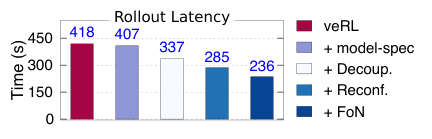

LLM 的后训练里，rollout 一项就吃掉 70%–80% 的训练时间。它的长尾特性让大量 GPU 空转：有的 worker 早把分配到的 prompt 生成完了，其他 worker 还在为少数难题反复解码，而训练步必须等所有人结束。
这篇论文来自上海交大 IPADS 与字节 Seed，把推理侧的推测解码搬到 rollout 上，并针对训练场景重做了两处关键设计：大 batch 下验证比生成还慢，以及不同请求的最优草稿方法并不相同。系统叫 SpecActor，基于 veRL 实现。
Rollout 在后训练中占据训练时间的主要部分，其中训练好的模型根据一批 prompt 生成 token。SpecActor 通过投机解码实现快速 rollout，部署一条快速 draft 路径来加速无法并行化的生成，同时通过与原始模型对输出进行快速并行验证来保证正确性。SpecActor 解决了阻碍投机效率的两项基础性挑战：(1) Decoupled 投机方法，克服了在每 worker 批大小相对较大时执行投机解码的计算低效问题——这是训练中的常见配置，但对投机并不友好；(2) Fastest-of-N 投机方法，根据 rollout 进展选择和组合不同的 draft 方法，从而在最优 draft 方法先验未知时也能逼近它。
在生产轨迹上的大量评估表明，相比常见的后训练基线，SpecActor 将平均 rollout 速度提升 2.0–2.4×，最高提升 2.7×。该结果在 稠密 与 MoE 模型以及不同 RL 算法上保持一致。在不同轨迹上，SpecActor 比 vanilla 投机 rollout 快 1.1–2.6×。加速后的 rollout 使端到端训练时间缩短 1.4–2.3×。
LLM（大语言模型）等大型基础模型在写作、编码等广泛任务上展现出卓越的准确率。用强化学习（RL）对这些模型进行后训练，已成为训练流程中的关键支柱，用于进一步增强模型在困难推理任务上的能力。
Rollout 是后训练中关键且决定性能的阶段：每一步，系统向模型输入一批 prompt，代表待解决的目标问题（例如数学或编码问题）。模型随后为每个 prompt 生成 token 以尝试求解。Rollout 结束后，生成的 token 被评估，模型据此更新。Rollout 天然地将批次并行到多个 worker 上。
问题陈述与现有解决方案。Rollout 占后训练时间的 75–80%。这种冗长且低效的执行主要源于生成中的长尾，并因等待最慢 worker 完成导致的 GPU 空闲而进一步加剧。长尾源于难度差异：某些问题需要比其他问题更多的 token 才能求解。因此，一个 worker 可能很快完成其分配到的 prompt，而另一个则需要更长时间。为确保训练快速且稳定地收敛，必须等待所有请求完成后才能更新模型。
在这一硬性约束下，本文提出一个具体但重要的问题：如何在不改变模型训练方式的前提下加速 LLM 后训练中的 rollout？
现有的与算法无关的解决方案分为两类，但鉴于 LLM 被训练以求解更复杂问题、生成长度不断增长的趋势，二者都未能充分解决该问题。第一类是重叠（overlapping），利用 rollout 中的空闲 GPU 执行训练流程的其他阶段。
它已被证明在短上下文 RL 训练中有效，但在长尾训练中效果较差，因为它并不直接加速 rollout，平均仅带来 1.1× 的加速。第二类利用并行性，使用空闲或超额配置的 GPU 加速后训练。但加速仍然有限（例如，GPU 数量翻倍时最高 1.2×），因为 LLM 生成受内存带宽限制，无法充分利用额外的算力。
本工作：无损且高效的投机式 rollout。我们提出 SpecActor，一个快速的 rollout 系统，将投机解码——加速 LLM（大语言模型）推理的常用技术——改造用于 LLM（大语言模型）后训练。
具体而言，投机解码为顺序生成（解码）引入一条快速路径：首先，由远小于被训练模型的 ``draft'' 模型生成 n 个 draft token 的序列。随后，被训练模型验证这些 token。一旦被接受，这些 token 即被视为由被训练模型生成。其原理是：验证 n 个 token 通常比生成它们更快——尽管使用的是同一个模型——因为验证可以并行处理多个 token。
需要强调，投机解码可通过精确 token 匹配实现与原始解码相同的无损生成。此外，草稿器 在后训练阶段即可获得：预训练流水线遵循既定的 scaling 实践同时生成小模型与大模型。再者，基于 n-gram 的 草稿器 无需模型。
尽管投机解码在推理中直观且有效，但在常见生产配置下，将 vanilla 投机解码应用于 rollout 最多只能带来 10% 的加速（第 5.2 节），原因在于以下挑战。我们通过两项贡献进一步解决这些问题。
通过解耦式投机实现计算高效的 rollout（第 4.1 节）。第一，投机解码的有效性主要取决于验证开销，而验证开销与每 worker batch size 成正比。然而，在常见训练配置下，例如每 worker batch size 为 128（见图 5 (a)），验证可能因触及 GPU 计算上限而比生成更慢，近期工作也注意到了这一点。尽管随着 prompt 完成，rollout 过程中 batch size 会逐渐下降，但在 rollout 时间的相当一部分（20%）内它仍相对较大（ 64），因此我们需要在对投机不友好的 batch 配置上实现高效执行。
关键观察是：存在加速验证的机会，因为 vanilla 投机执行由于 draft-n-然后-验证的耦合依赖关系，限制了分配给（计算密集的）验证的 GPU 时间：验证器必须等待 GPU 利用率不足的 草稿器 任务。这一依赖关系对于确保所有请求都具备高投机效率是必要的（推理中即如此要求），因为若没有它，当验证拒绝 1 到 n 中的某个 token 时，草稿器 会进一步浪费全部 n 之后 个 token。然而，对于仅关心 batch 完成时间的 rollout 而言，这种依赖过于保守，因此牺牲少量请求以加速其他请求是有益的。基于此，我们提出解耦式投机，以放松 draft 与验证之间的依赖。草稿器 无需等待验证完成即可继续 草稿生成，从而使后续验证能更早开始，最大化分配给验证的 GPU 时间。解耦的代价是由于更多在途未验证 token 导致接受率下降。幸运的是，许多请求的接受率仅略微下降，因此计算收益抵消了接受率损失。此外，我们进一步提出基于反馈的 draft window 机制，通过在线重配置动态最小化此类激进 草稿生成 所导致的 token 浪费。
通过 Fastest-of-N 投机实现有效的 draft 自适应（第 4.2 节）。第二，投机解码有多种候选 draft 方法，常见做法是依据性能分析或经验为所有请求选择单一 草稿生成 方法。然而，我们在 rollout 中发现不同请求适合不同的 draft 方法，因此使用单一固定方法可能导致 长尾请求 的投机效率低下。但为所有请求选择最优方法颇具挑战，因为对每个请求而言，最优方法不仅取决于 草稿器 的速度，还取决于验证的接受率。后者事先未知，因为它依赖于模型输出。
同时，为每个请求运行多种 draft 方法并不现实，因为这需要成比例增加的验证器，进而需要额外的 GPU。
我们提出 Fastest-of-N 推测，通过以下三种技术为所有请求近似最优的 draft 方法。第一，提出一种名为 draft ladder 的新抽象，在给定 draft 方法池的前提下建立从各种接受率到加速比的映射，该映射可离线构建。基于该 ladder，在 rollout 开始时，利用迄今为止性能分析得到的所有请求的平均接受率选择一个估计最快的 draft 方法。其原理是：即使每个请求的接受率差异显著，一个（大批次）请求的平均接受率在统计上是稳定的。因此，所选 draft 方法很可能接近该批次的最优解。最后，当 rollout 过程中批次大小减小、初始选择变为次优时，利用已完成 worker 释放出的 GPU 并行启动更多 draft 方法处理长尾请求，当最快的 draft 方法生成被 验证器 接受的结束符（EOS）时，该请求即完成。并行运行多个 draft 方法提高了在未知接受率下选出最快方法的可能性，同时利用空闲 GPU 避免了额外的 GPU 占用。
演示。SpecActor 对任何训练算法都保持精确的 rollout 过程，算法设计者可无缝使用，无需担心潜在的精度损失。SpecActor 基于 veRL 构建，后者是当前最先进的后训练框架。
SpecActor 易于集成到其他训练框架，它可作为任意后训练流水线推理组件的即插即用替代，无需修改训练逻辑。大量评测表明，在多种真实训练 trace 以及 GRPO、DAPO、PPO 等常见后训练算法上，与 veRL 和 RLHFuse 等当前最先进方案相比，SpecActor 将端到端训练时间加速 1.4–2.3×。此外，在不同 trace 上，比朴素的 推测式 rollout 基线快最多 2.6×。
基于 LLM 的生成。LLM（大语言模型）通过 prefill 和 decode 两个阶段生成响应（称为 token）。prefill 阶段处理初始输入（称为 prompt）以生成第一个 token。随后 decode 阶段以自回归方式迭代生成后续 token，将先前的输出 token 与原始输入拼接作为新的输入。decode 阶段在生成 end-of-sequence token 时终止。
后训练工作流。领先的 LLM（大语言模型）通过多步执行的强化学习（RL）进行后训练，其中每一步都遵循相同的三个阶段：
1. Rollout。该过程将训练模型作为 actor，使用 LLM decoding 从采样的一批预定义 prompt 生成 token。这些 token 用于解决数学问题等特定任务。
为加速 rollout，采样的 batch 被划分为更小的 micro-batch（下文仅涉及 micro-batch，因此为不失一般性，统一使用更通用的术语 batch 表示 micro-batch），并由多个 rollout worker 并发处理。每个 worker 将模型部署在一个或多个 GPU 上，必要时使用模型并行。
关于 rollout batch 需注意两点。
其一，为提升效率，生产环境 RL 训练每步采用相对较大的 rollout batch size 以找到足够的正奖励，例如典型的 32B 任务将每步总 batch size 设为 8K。
其二，每个 prompt 通常只被见到一到两次（常见训练仅 1–2 个 epoch），限制了 experience replay 等基于 n-gram 方法的有效性。
2. Prepare。在 prepare 阶段，rollout 结果输入一组 评判器（例如单独的 reward model）以生成奖励，这些奖励是指导参数优化的算术信号。这些 评判器 是轻量级的；例如 reward model 仅计算一次前向传播，而非自回归生成，因此所需时间在训练步中可忽略不计。
3. Learn。给定 prepare 阶段的信号，learning 阶段计算 loss 并通过反向传播更新 LLM（大语言模型）参数。更新后的参数随后用于下一次 rollout 步骤。

rollout 主导 后训练 的执行时间，并造成显著的 GPU 浪费。图 2 (a) 分析了典型训练任务中总 后训练 时间的构成：rollout 占总训练时间的 70–80%。由于 后训练 可能在数十万块 GPU 上持续数天，加速 rollout 对降低整体训练成本至关重要。

rollout 仍有显著改进空间，因为长生成尾问题导致大量 GPU 在 rollout 阶段处于空闲。图 2 (a) 展示了长尾 rollout 中的 GPU 气泡：在 DAPO-32B-20K trace 上，平均有 50% 的总 GPU 时间浪费在等待最慢的 worker 完成。即使每个 worker 的 batch size 相同，各 worker 的 rollout 时间也差异显著，因为解决不同任务所需的 token 数量差异很大，且确切数量由 LLM 输出决定，难以提前预测。此外，随着训练推进，浪费还会加剧，因为模型变得“更聪明”后倾向于生成更多 token 来解决特定任务。
通过重叠降低 GPU 浪费对长尾生成仅带来少量加速。减少 GPU 时间浪费的一个直观方案是将其他阶段与当前 rollout 重叠：如图 3 (a) 所示，RLHFuse 等代表性方案利用空闲 worker 执行已完成 batch（如 batch (1)）的 prepare 和 learn 阶段，将快 worker 的这些阶段与慢 worker 的 rollout 重叠。这种重叠无法加速受最慢 worker 制约的 rollout 阶段，但能缩短端到端训练时间，
因为最慢的 rollout 完成后，更多 GPU 可以参与加速最慢 batch（如 batch (2)）的剩余阶段。
然而，重叠带来的加速有限，因为加速后的 prepare 与 learn 阶段仅占整体训练时间的一小部分（图2 (a) 中约为 5%）。因此，在响应预算较长的 trace 中，RLHFuse 仅将 后训练 加速 3.%，GPU 时间仍被浪费，如 图2 (b) 所示。
rollout 的顺序生成特性是加速的关键障碍。另一种直观的解决方案是动态增加计算资源来加速长尾 worker：如 图3 (b) 所示，一旦某个 rollout worker 完成其分配的 batch（例如 batch (1)），它便可借助序列并行等并行 LLM 生成技术，帮助加速尚未完成的 batch（例如 batch (2)）的生成。此外，现有工作会激进地增加更多 GPU（例如通过分配 spot instances）来加速缓慢的 rollout worker，而无需等待更多 GPU 空闲。在该示例中，现在有三个 worker 共同处理 batch (2) 的 rollout。遗憾的是，如 图2 (b) 所示，即使为 rollout 配置 2× 块 GPU，端到端训练时间也仅提升 1.2–1.3×。加速受限的根源在于 rollout 的顺序、访存受限（memory-bound）特性：token 必须逐个生成，额外的通信开销使张量并行或序列并行几乎没有发挥空间；此外，在访存受限时，数据并行与流水线并行几乎无法带来加速。
现有系统要么加速有限，要么采用有损的加速手段，例如 off-policy 训练或截断尾部生成。
我们寻求一种与算法无关的系统级方案来实现快速 rollout。
机会：用于 rollout 的推测解码。这是加速顺序式 LLM 生成的常用技术：如 图4 (a) 所示，原始生成使用正在训练的模型为当前 batch 迭代生成 token。在推测解码 (b) 中，首先用快速草稿方法生成一串 token，例如使用更小的模型。随后，草稿 token 由训练模型验证，通过后才被接受为生成的 token。

由于验证可对多个 token 并行执行，若 GPU 计算不是瓶颈，其耗时与生成单个 token 相当或更短。因此，若 token 被接受，推测解码比原始生成快得多，如 图6 (b) 右半部分所示。反之，若验证拒绝草稿 token，例如示例中请求 3 的 5^th 个 token，则被拒绝的 token 及其后的草稿 token（例如 token 5–6）将被丢弃，草稿器 从 token 6 重新开始——因为验证会给出正确的 5^th 个 token。
挑战 #1：典型训练配置下加速有限。虽然思路直观，但我们发现把最先进的推测解码直接用到 rollout 上，加速幅度有限，原因是在训练中常见的每 worker 批大小下，推测验证本身效率不高（见图6 (a)）。图5 (a) 展示了从生产级后训练任务中收集到的每 worker 批大小分布，(b) 对比了在 Qwen2.5-32B 上用推测解码与原始生成生成最多 4,096 个 token 的耗时。可以看到，在常见的每 worker 批大小（例如 128）下，推测解码没有增益甚至负增益。原因是：随着请求批大小增加，验证耗时的增长比生成更显著，如图6 (d) 所示，因为验证引入的 token 批比原始生成更大。

随着更多请求完成，rollout 期间 per-worker batch size 会下降。
然而，在至少 20% 的 rollout time 中，我们的 DAPO-32B-20K trace 中的 batch size 相对较大，这仍然需要高效的 推测解码 加速。在训练中，即使微小的加速也很重要，因为有可能节省大量 GPU hours。

我们的解决方案：decoupled 推测。我们在引言中提到，SpecActor 把 draft 与验证之间的依赖解耦，从而让 GPU 在推测解码中被充分利用。如图6 (c) 所示，与草稿器必须等待验证器的传统耦合执行不同，我们 (1) 把草稿器和验证器放到不同的 GPU 上，(2) 允许草稿器不等验证器、持续激进地草稿。这种执行方式给验证端让出了更多 GPU 时间：我们只需为草稿器分配少量 GPU，避免大量 GPU 在草稿阶段利用率不足。注意，在同一组 GPU 上，解耦执行会提高验证端的每 worker 批大小：在我们的例子里批大小翻了一倍。这并不会抵消解耦带来的收益，因为以两倍批大小（从 128 到 256）做验证只多出 1.4 倍延迟（见图6 (b)）。此外，我们的放置方法会配置合适的并行度，把验证分散到更多 GPU 上，进一步压低成本。
解耦推测解码的风险是：接受率下降时会浪费更多 GPU 资源。在图6 (c) 的例子中，如果第 1 到第 3 个位置中有 token 被误推测，额外草稿出的 token（4 到 6）就会被丢弃，而这在耦合推测中不会发生。我们发现这对多数请求影响很小，因为它们的接受率仍然很高，解耦执行的加速足以抵消浪费，仍能快速压低每 worker 批大小。为了应对接受率显著下降的请求，我们只放松、不完全丢弃 draft-验证依赖：用 draft window 控制激进程度，即草稿器只允许超前验证器一定数量的 token。一旦检测到某个请求的接受率明显下降，我们的请求级重配置就会在线调整这些窗口。

挑战 #2: 在没有先验知识的情况下选择最佳 draft methods。选择最佳的 draft method 对确保高加速至关重要，但难度很大，因为每个 prompt 的最优 draft method 各不相同且无法先验得知。这种多样性源于给定请求的 接受率 差异。图7 展示了从训练 trace 采集的一批请求中，不同 draft method 在不同请求上的加速效果：许多请求在 0.5B 草稿生成 model 下加速最高，部分请求需要 1.5B 模型，还有一些需要 n-gram 等统计方法。直接并行执行多种 draft method 不可行，因为这需要显著更多的 GPU——不仅要承载多个 draft model，还要验证它们的输出。
我们的方案：Fastest-of-N 推测。在 rollout 开始时，利用 profiled 接受率 选择估计最优的 draft method，依据是：虽然每个 prompt 的 接受率 差异显著，但对大批量而言，平均 接受率 在统计上稳定。因此基于平均值的选择很可能接近该批次的最优解。最优 draft 依据离线构建的 ladder 选出，该 ladder 综合考量了主要方法，包括基于模型的与基于 n-gram 的。
在 rollout 过程中，当请求完成释放出更多 GPU 时，SpecActor 动态利用空闲 GPU 为尾部请求部署更多 draft method，此时并行 草稿生成 自然更接近最优 draft method，因为只要最快的 draft method 生成出全部 token，该请求即可视为完成。如 图6 (d) 所示，若 worker 3 空闲，我们加入次优的 draft method（1.5B）来加速未完成的请求。注意，示例中只增加了一个 验证 实例，因为 草稿器 相对轻量，可以捎带在其他 worker 上。若 1.5B 草稿生成 model 更早完成，该请求即完成，并从其他 worker（例如 worker 0 和 1）上移除。

系统架构。图8 展示了 SpecActor 的系统架构：global 调度器 在初始 rollout 阶段搜索高效的解耦推测方案；每个 worker 在运行时针对低 接受率 请求动态重配置执行计划以提升效率。global 调度器 监控各 worker 的 GPU 使用情况，为长尾请求部署额外的 draft method。我们的 runtime（）高效支持 Fastest-of-N 推测 所需的扩展原语。
方法。我们采用两步调度方法实现高效的解耦推测：(1) 在 rollout step 开始时确定最优 placement——即分别将多少 worker 分配给 草稿生成 与 验证——以最小化 batch 完成时间。在 rollout 过程中，(2) 动态监控运行中请求的 接受率，及时调整其激进 draft 的 token 数量（通过 draft window），以最小化验证失败的影响。
我们选择在 rollout 过程中仅调整每个请求的 draft window，而不调整运行中 batch 的整体 placement，原因有三。第一，最优 placement 依赖对系统执行的建模，但随着请求完成导致 batch size 持续减小，该建模的准确性不断下降。第二，重新配置 placement 的开销可能超过其收益。最后，由于采用最优初始 placement 的解耦执行，batch size 迅速收缩，我们不再需要最大化计算效率，而 (2) 对尾部请求的细粒度调整已足以带来充分的加速。
下面首先描述如何通过 draft window 控制浪费的 token，然后介绍这两种策略。
Drafting window（w）与松弛的 draft–验证 依赖关系。为控制误推测造成的浪费，我们设置一个与先前工作类似的窗口：一旦 草稿器 向 验证器 发送 w 个 token，它只被允许再激进 draft 另外 w 个 token。若 验证器 尚未完成验证，草稿器 即停止等待 验证器 的反馈。如此，在推测失败时 草稿器 最多浪费 2w − 1 个 token，如 图9 所示。

1. 解耦推测执行计划。在每个 rollout step 开始时，给定 draft 方法、被训练的模型和可用的 GPU，planner 会为整个 batch 确定合适的 draft window，并通过把草稿器与验证器分配到不同 GPU 上得到一份高效的初始解耦推测执行计划。该计划在整个后训练过程中只需执行一次：每一步中每个 worker 的初始批大小不变，而接受长度（每次验证的平均输出长度）对主流草稿器而言是稳定的，如图10 所示。我们报告的 EAGLE 接受长度低于 TLT（按 TLT 作者说明未做 prompt 调优），因为我们的 rollout 采样温度设为 1.0，并使用面向大 batch 调优的配置，这是后训练中常见的生产设置。
寻找最优执行计划需要求解不同 草稿器 与 验证器 并行配置的组合问题，并使用 draft window 精确建模推测解码的性能。为简化问题表述，我们沿用先前工作的假设：开发者已提供一组可用于运行 验证器 的 GPU 配置（G），即一份模型参数如何在一组 GPU 上划分。对于 草稿器，因其轻量，我们假设仅使用一个 GPU。
算法1 描述了我们的算法，其本质是基于枚举的搜索，并采用解耦执行感知的剪枝来加速该过程。首先，给定一批待生成的请求（B），我们选择一个验证配置（第 2 行），并针对不同数量的 draft GPU（第 3 行）和不同的 draft window 大小（第 6 行）估计其在解耦执行下的性能（当前 TGS）。我们持续选择执行方案，最终选取估计生成时间最小的方案（第 8–10 行）。
为缩短搜索时间，我们通过以下方式剪枝枚举空间：(1) 利用 草稿器 所需 GPU 数量少于 验证器 这一观察（第 3 行），(2) 剪除任意过大的 draft window，因为过大的窗口只会增加误推测时的计算浪费（第 5 行）。

对 TGS 建模。规划的一个关键环节是为解耦执行建模性能——token 生成速度（TGS）。我们采用自底向上的方法，先对 草稿器 与 验证器 的执行时间建模，再转向 TGS 期望的建模，同时考虑在选定 draft window 下因误推测所浪费 token 的影响。
给定一批请求 b、草稿器 worker 数量 gd 以及执行配置为 gv 的 验证器，draft（D(gd)）与验证（V(gv, w)）时间可近似为关于批次大小（b）的仿射函数：[-10pt]
D(gd, b) = b × D′(gd) + α(gd)；V(gv, w, b) = b × V′(gv, w) + β(gv, w)
其中 D′(gd)、V′(gv, w)、α 与 β 是离线性能分析拟合出来的超参数，与已有工作类似。
因此，在解耦执行范式下生成 w 个 token 的总生成时间可建模为：[-10pt]
IL(gd, gv, w, b) = max{w × D(gd, b), V(gv, w, b)}
除执行时间外，还需考虑误推测导致的减速。给定 draft window w 与一批请求中单个 token 的接受概率 p，我们沿用已有工作的做法，先对 draft window 内给定 n 个 token 时接受 个 token 的概率建模，再据此计算期望浪费的 token 数。区别在于，我们进一步考虑解耦执行中激进推测带来的额外浪费 token。具体而言，在 draft window 内，给定估计接受概率（p）时接受 a 个 token 的概率为：[-10pt]:
P(a, w) = pᵃ × (1 − p)（当 0 ≤ a ≤ w − 1）；P(a, w) = pᵃ（当 a = w）
p 使用前述步骤的设置进行性能分析，我们发现它对相对较大的批次请求相当稳定（见 图10）。
为 draft window w 起草所生成 token 总数的期望为：[-10pt]
τ(w) = Σ pᵃ(1 − p)(a + 1)/2（a 从 0 到 w − 1，部分接受）＋ w × pʷ（完全接受）
即 token 在不同位置被接受时生成的期望 token 数之和。
综上，TGS 的期望为：[-5pt]
TGS(gd, gv, w, b) = τ(w) / IL(gd, gv, w, b)
Algorithm 1: Decoupled execution plan generation at the start of the rollout
Input : global batch size B; cluster GPU count G; verification configs G_cfg
Output: GPUs for drafting gd*, GPUs for verification gv*, draft window w*
TGS* <- 0; (gd*, gv*, w*) <- (0, 0, 0)
for each verification config gv in G_cfg:
for gd <- 1 to gv: // drafter needs fewer GPUs than verifier
b <- ceil((gd + gv) * B / G)
w_max <- max(ceil(V'(gv, w) / D'(gd)), ceil(beta(gv, w) / alpha(gd)))
for w <- 1 to w_max: // prune overlarge windows
TGS_cur <- TGS(gd, gv, w, b)
if TGS_cur > TGS*: update TGS* and (gd*, gv*, w*)
return (gd*, gv*, w*)Algorithm 2: Request-level reconfiguration for reducing mis-speculation overhead
Input : pre-searched decoupled plan (gd*, gv*, w*);
requests whose acceptance rate is below average, set R
Output: per-request draft plan (w_r, m_r) for r in R;
w_r = request draft window, m_r = coupled or decoupled speculation
for each request r in R:
p <- ProfileProbability(r)
(w_c, tgs_c) <- argmax_w TGS_coupled(w, p, b=1)
(w_d, tgs_d) <- argmax_w TGS_decoupled(gd*, gv*, w, p, b=1)
(w_r, m_r) <- SelectBetter((w_c, tgs_c), (w_d, tgs_d))
return {(w_r, m_r) : r in R}2. 动态请求级重配置。在 decoupled execution 期间，动态监控每个请求的 接受率，并据此调整其 draft window。Algorithm 算法2 总结了重配置算法，该算法在 rollout 期间被周期性调用。
调用时，算法首先检查 接受率 低于平均值的请求集合（第 1 行），并复用前述用于 decoupled execution 的性能模型，以及 coupled execution 的扩展建模（耦合执行的 TGS()，因篇幅限制省略，其建模逻辑与 decoupled 建模类似），以枚举最优配置。
在线重配置需注意三方面。第一，不频繁触发重配置，原因在于：(1) 接受率 可能在短时间内剧烈变化；(2) 过于频繁的重配置可能引入性能不稳定。当前每 1000 次解码迭代重配置一次系统。第二，并发执行不同 window size 的请求，以最大化 GPU 利用率。为实现高效协同执行，将具有不同 draft window 的 kernel 调度进融合的 CUDA graph。最后，coupled execution 与 decoupled execution 之间的切换简单直接，只需暂停被切换请求的 aggressive draft 即可。
选择 rollout 的 draft method 的目标是选取加速比最高的方法。难点在于平衡 draft efficiency 与 接受率，因为给定请求在执行前 接受率 未知。
应对该难点的思路是：通过离线性能分析可以以 接受率 为参数估计不同 draft method 的加速比。基于该信息，在 rollout 开始时使用 batch request 的平均 接受率 贪心选择 draft method，并可进一步根据运行时收集的 接受率 改进选择。

Draft ladder。给定固定接受率，draft ladder 提供不同 draft 方法的加速比信息，如图 11 (a) 所示。它可通过离线 profiling 高效构建，且无需使用训练模型，原因在于：(1) 草稿器 的执行与训练模型无关；(2) 加速比可按给定接受率随机接受 token 来模拟。因此，离线 profiler 直接以模拟的接受率运行各 draft 方法，从而构建 ladder。
当前 ladder 纳入主流 draft 方法，包括基于模型的与基于 n-gram 的两类。对基于模型的 draft，使用与大模型同系列的 checkpoint，该 checkpoint 在后训练流程之前联合发布。此做法与先前的推理工作类似，但不能使用 thinking 版本的 draft 模型，因为它们通常在大 thinking 模型就绪后才蒸馏得到。我们也考虑过更多 draft 方法，包括基于训练的 草稿器，如 EAGLE 系列。未纳入 MTP，因为所评估的模型未集成它。需要强调，我们的设计与 draft 方法正交，若更多 draft 方法能进一步提升推测加速，集成它们很可能使 SpecActor 更快。
rollout 开始时的 draft 方法选择。初始阶段，基于历史 profiling 得到的接受率，为整个 batch 选择一种 draft 方法。profiling 只需执行一次，因为 profiling 结果在不同 step 间稳定（见图 10）。不能选择多种方法，因为每个 草稿器 所需的验证量相近，而初始阶段 GPU 算力不足。
图 11 (b) 给出选择过程：对三种示例 draft 方法——n-gram、0.5B 与 1.5B 模型 草稿生成，先查询这些方法已 profiling 的接受率，并将其作为该 batch 的估计接受率。据此估计每种 draft 方法的加速比（(1)），再选出其中最快者（(2)）。
Algorithm 3: Greedy Fastest-of-N assignments
Input : active request set R; candidate draft method set D;
W_d = workers responsible for draft method d; W = all free rollout workers
Output: added drafters and the requests they serve, M = {(r, d) : w}
R <- sort R by GetAcceptRate(r) ascending
D <- sort D by GetLadderRank(d) ascending
for each request r in R:
for each draft method d in D:
if M(r, d) is None:
w <- GetMinLoadWorker(W_d, b_max)
if w is not None:
M(r, d) <- w; load(w) += 1
return M贪心 Fastest-of-N 分配。为应对尾部请求初始选择次优的问题，一旦 batch 完成后 草稿器 与 验证器 的 GPU 均空闲，就贪心地部署更多 draft 方法。算法3 给出在存在可用 worker 时分配更多 草稿器（及其对应 验证器）的算法。只要出现空闲 worker，该例程就会被迭代调用。
算法按接受率倒序对请求排序后分配 草稿器（第 1 行），因为这些请求从推测解码中获益甚微。对每个请求，若尚未分配，则依据前述 draft ladder 加入加速比最高的 草稿器（第 2、5 行）。贪心地为请求分配尽可能多的 草稿器，直至没有可用 worker 或待处理请求（第 3–9 行）。若某请求的分配已完成，则处理下一个请求。
这里采用 draft-first 设计：在转向下一个请求之前，尽可能将多个 draft 方法分配给同一个请求。其依据是，接受率最低的请求很可能遭遇次优 draft，因此在空闲 worker 数量充足时，draft-first 策略能自然为其选择最优 draft 方法。若空闲 worker 数量不足，则优先选择 draft ladder 中排名更高的 draft 方法。
关于可演进 draft 方法的讨论。我们的 ladder 假设 draft 模型在 后训练 期间保持冻结，因为发现 draft 方法的接受率在不同 step 间保持稳定（即使间隔很长），见图 10。
我们推测这是因为即使训练模型变得更聪明，只要训练模型能及时纠正错误 token，许多简单 token 仍可被 draft。注意，近期的 draft 训练优化与我们的设计正交，因为它们同样可应用于我们的小模型。此外，集成这种演进需要对 rollout 和训练引擎都做侵入式修改。因此，我们未将其纳入实现。
SpecActor 仅优化 rollout 阶段，不对训练引擎做侵入式修改，这与 相反。运行时扩展也很轻量：支持解耦执行仅需在 草稿器 与 验证器 之间传递消息，我们进一步引入两个原语来支持 Fastest-of-N 推测：
模型规模。该原语将服务实例——要么是 草稿器，要么是 验证器——部署到特定 worker。这类似现有服务引擎中的模型自动扩缩容，我们采用了其全部设计，包括在 worker 上预固定服务引擎、使用 GPU 执行上下文池预物化 CUDA graphs，以及通过 GPU 间高速网络传输模型权重。为进一步消除将大型训练模型权重加载到 GPU 的开销，尤其是在部署新 验证器 时，我们观察到 验证器 仅部署到空闲的 草稿器 上，且由于 draft 模型规模小，草稿器 的 GPU 显存占用很低。因此，我们进一步将训练模型固定到 草稿器 上，以实现零成本 验证器 部署。
KVCache 规模。除模型外，在扩缩新 草稿器 对应的 验证器 时，新 验证器 需要一份 KVCache——LLM（大语言模型）计算的中间结果——来加速计算。一个挑战是，在 rollout 后期，KVCache 可能变得很大，因为其大小与模型规模和已生成 token 数成正比。为此，可利用经典 KVCache 恢复方法，通过网络传输尾部 KVCache 并从头重算，以加速 KVCache 扩缩。
我们在 veRL 上实现了 SpecActor——veRL 是当前最先进的后训练框架，已集成 CUDA graph、prefix caching 和 FlashAttention kernel 等已知的推理优化。
测试平台。我们在最多含 512 块 GPU 的生产训练集群上评估 SpecActor。这些 GPU 组织为节点，每个节点包含八块 Hopper（80 GB）GPU，通过 400 GB/s NVLink 互连，跨节点 GPU 之间具备高达 400 Gbps 的 RDMA 连接。
评估的 trace：模型、算法与 rollout 温度。与先前工作类似，我们评估 Qwen 系列模型（Qwen2.5-32B），因其是最流行的开源 LLM（大语言模型）之一，且被算法设计者广泛使用。我们基于生产设置，针对 3 条代表性的 200 步训练 trace 进行评估，涵盖不同（主流）后训练算法：[-18pt]
● GRPO-32B-20K。该 trace 使用 GRPO 算法训练 Qwen2.5-32B，GRPO 是一种代表性的无 value model 的后训练方法，用于训练 DeepSeek 系列等高质量模型。该 trace 在每一步采样总 batch 为 8,192 条 prompt（包含 group sampling 因子），每个 batch 中模型以 20K token 的预算生成回复。该 trace 运行在 256 块 GPU 上，每个 rollout worker 的张量并行（TP）度为 4，因此每个 worker 的初始 batch size 为 128。
● DAPO-32B-20K。该 trace 同样使用 DAPO 训练 Qwen2.5-32B——DAPO 是 AI 学术界与工业界的热门算法——每步 batch size 为 16,384，回复预算为 20K token。该 trace 运行在 256 块 GPU 上，每个 rollout worker 的 TP 度为 4，因此每个 worker 的 batch size 为 256。DAPO 需要更大的每步 batch size，因为其训练方法会过滤掉 rollout 过程中生成的低质量回复。
● PPO-32B-20K。PPO 是另一种广泛使用的 RL 算法。训练模型为 Qwen2.5-32B，PPO trace 的不同之处在于：(1) 它额外使用一个 32B critic 模型生成 value，并将 critic 与 actor 模型一同训练；(2) 同时，它对每条 prompt 只采样一个回复。每步 batch size 为 4,096，最大回复长度为 20K token。该 trace 在与上述两条 trace 相同的集群配置上运行。
在所有实验中，我们将 LLM（大语言模型）生成的采样温度设为 1.0——这是后训练中的常见设置——但该设置会对 推测解码 产生负面影响。
LLM 后训练 需要此类设置来探索更多样的响应并避免 entropy collapse；否则，训练后的模型会过早收敛，限制其进一步提升性能的潜力。
受 GPU 时间约束，实验聚焦于 稠密 32B 模型，同时也在大型 Qwen3-235B MoE 模型上进行了实验，以验证 SpecActor 的有效性。
评估指标。我们重点报告端到端训练时间与 rollout 时间——训练时间是算法开发者最关键的指标，而 rollout 主导了时间开销。为保证评估具有代表性，我们对所有训练 step 均匀采样至少 10%，使用采样 step 处的训练 checkpoint 进行生成，并报告其训练与 rollout 时间。
基线。我们将 SpecActor 与以下基线进行对比，并仔细调优了其实现与性能。所有系统均采用 vLLM v0.10.0 engine 进行 rollout。具体而言，在我们的平台上，当每 worker batch size 为 1 时，Qwen2.5-32B 模型的解码延迟可低至 13ms。
对于所有基线，我们报告训练的最优配置
即 FSDP degree 为 32，以及 8-way sequence parallelism。[-10pt]
● veRL 是 Seed 使用的开源 后训练 系统，SpecActor 基于它构建。除本节开头提到的推理优化外，它还进一步引入高效参数更新等技术，以快速为 rollout 更新参数。
● RLHFuse 是最先进的 后训练 系统，通过重叠 prepare 与 rollout 阶段来减少长尾生成造成的 bubbles。由于其未开源，我们仔细复现了其设计，并在短上下文任务上实现了相近的加速效果。
● veRL (2×) 配置了原始 trace 中 veRL 所用 GPU 数量的 2× 倍，代表像 RLBoost 那样使用更多 GPU 加速 RL 时的最优性能。
● veRL + （vanilla）model-spec。为说明所提技术的有效性，我们还对 veRL 进行对比，在推理系统中引入基于模型的 推测解码。我们运行 coupled 推测，draft 方法依据 Fastest-of-N 推测 的第一阶段选取。对于 32B 训练，0.5B 是加速的甜点值。
● veRL + （vanilla）n-gram。N-gram 是其他工作用于加速 rollout 的常用 推测解码 方法。我们基于 vLLM 的 n-gram（v0.10.0）集成了其 基线，并引入 SAM 等近期技术进行增强，以尽可能贴近其实现（其代码未开源）。我们还用 vanilla 推测解码 增强 veRL。具体而言，我们采用基于 small-LLM 的 推测，以便读者更好地理解我们的设计如何改进现有 推测解码 方法。我们将其谨慎地移植到 vLLM 上，以利用其 v1 代码库。
SpecActor 使用的 draft 方法。除另有说明外，我们为 Qwen2.5-32B 选取可用的 草稿器
在 后训练 pipeline 之前：Qwen2.5-0.5B、Qwen2.5-1.5B——以及一个 n-gram 草稿器。其他 草稿生成 方法（如 EAGLE）需要额外的训练支持，而我们评估的所有模型并不都支持。
图 12 展示了不同方法在各 trace 上的端到端训练 step 时间。我们测量了全部 1/10 的采样训练 step，并报告不同方法的平均 step 时间。每个 step 都使用 trace 中完全相同的 model checkpoint 和 prompt batch，以忠实复现真实工作负载。相比 veRL、RLHFuse 等 基线，SpecActor 的端到端训练快 1.5–1.7×。对于 vanilla 推测解码 基线，SpecActor 在不同 trace 上训练时间缩短 1.2–1.5×。即使与使用两倍 GPU 的 veRL (2×) 相比，SpecActor 仍实现 1.3–1.4× 的训练加速。关键原因在于通过高效机制加速 rollout：在 rollout 阶段，SpecActor 的平均生成速度比 veRL 快 2.0–2.4×。


SpecActor 的平均 rollout 时间缩短达 1.4–2.0×，即便与同样引入 推测解码 加速的 model-spec 和 n-gram 方法相比也是如此。原因有二：其一，两者都因初始阶段较大的 per-worker batch size 而效率低下。
其二，两者（尤其是 n-gram）对 长尾请求 的接受率都偏低，因为 n-gram 方法在训练轨迹中常见的高 temperature sampling 且 history prompts 稀少的场景下表现不佳。具体而言，n-gram 对最后完成的请求所跳过的 iteration 在各类轨迹中为 16.9–43.6%，而 SpecActor 凭借 Fastest-of-N 推测 达到 40.9–73.5%。

图 14 展示了在 256 块 GPU 上以 GRPO 算法训练 Qwen3-235B MoE 模型时 SpecActor 的性能。受 GPU 时间与可用 checkpoint 限制，仅评估了少量步骤：后训练 起始处的 0–5（使用 Qwen3-235B-Instruct-2507）以及训练末尾的 n 到 n+5（使用 Qwen3-235B-Thinking-2507）。区别在于较后的步骤倾向于生成更长的 response。per-step batch size 为 256——受 GPU 显存限制而略小，每个 rollout worker 使用 expert parallelism (EP) 为 8 以获得更高的 decode 效率。
draft ladder 由 后训练 pipeline 之前产出的小模型扩展：Qwen3-4B-2507-Instruct（与 235B 一同发布）、Qwen3-0.6B 和 Qwen3-1.7B。
相比 veRL，SpecActor 将训练时间缩短 1.4–2.3×，rollout 加速 1.5–2.6×。得益于 decoupled 与 Fastest-of-N 推测，其性能也优于 vanilla mode-spec 1.1–1.5×。即便 per-step batch size 相对较小，MoE 模型中的 验证 开销 依然很高，并会因 expert communication 进一步加剧。Qwen3-4B-2507-Instruct 在 推测 上的表现明显优于另外两个模型，推测其 training pipeline 与 235B 紧耦合，因而与 235B 的对齐更好。
随着模型在不同 training steps 上演进，推测解码 的效果随之变化。图 13 进一步给出不同训练步骤的详细 延迟 breakdown。为便于展示，选择性呈现 100–200 training steps 之间的部分步骤，以考察 推测解码 在实际 后训练 中的效果。内部 accuracy 测试确认该差距足够大，因此不同 sampling steps 下训练模型的 “smartness” 存在差异。
SpecActor 在所有步骤中仍保持最短的 rollout time。具体而言，在第 175 与 200 步，veRL + model-spec 和 n-gram 均无法提供加速，原因是模型变聪明后，更多 prompt 会产生更长的 response，在相对较大的 per-worker batch size 下导致 rollout steps 增多。相比之下，SpecActor 稳定地将 rollout time 缩短 1.8–2.7×，在不同训练轨迹中比 vanilla 推测解码 基线快 1.4–2.6×、1.2–2.2×、1.2–2.6×。得益于快速生成，更多 worker 提前完成，为 SpecActor 留出充足的 FoN 调度空间。
图 15 通过消融研究验证所提出各项技术的有效性。受篇幅限制，此处仅报告一个 step，不同 trace 中的其他 step 结果类似。

首先，vanilla 推测解码 仅降低 2.6% 的 rollout 端到端延迟，幅度很小，原因是大批量验证的低效以及针对长尾请求的 draft 方法并非最优。
借助 decoupled 推测解码，rollout 加速 1.3×。在 decoupled 推测解码 的基础上，dynamic reconfiguration 进一步将 rollout 时间缩短 1.2×，得益于更优的初始执行配置，以及对 接受率 较低的 worker 进行动态重配置以减少浪费的 token。最后，Fastest-of-N 推测解码 进一步将端到端 rollout 加速 1.2×，得益于其能够利用多种 draft 方法提升 长尾请求 请求的 接受率。

图 16 深入分析了 rollout 期间不同 worker 采用我们的技术所完成的工作，以此结束对 SpecActor 的评估。
为便于展示，仅采样 5 个 worker，重点选取提前完成的 worker 与最慢的四个 worker。
首先，图 16 第一行显示，vanilla 推测解码 仍受长尾 worker 困扰：初始阶段所有 worker 执行都较慢，而在末尾，初始选定的 draft 方法无法加速最慢的请求。采用 decoupled 推测解码（第二行）后，推测解码 性能提升 1.1–1.5×，但仍因 draft 方法并非最优而受长尾请求影响。启用 Fastest-of-N 推测解码 后，在图 16 的 151s 处，空闲出来的 worker 被分配不同的 draft 方法（用不同色块表示不同 draft 方法）。这使得最慢请求随后加速 1.5×。
通过算法修改实现 rollout 加速。一些工作提出通过算法改动来加速 rollout，例如跳过尾部生成。这类修改实质上使训练变为 off-policy 的变体（相对于本文所针对的 on-policy 设置），理论上收敛不稳定，并且我们观察到它们在生产中并不总是被采用。
资源受限设置下的 rollout 加速。Seer 和 RollPacker 等近期工作针对资源受限设置下的长尾生成问题，即每个 worker 的 GPU 容量有限，无法容纳所分配的 batch。
因此，batch 必须进一步划分为多个 sub-batch，每个 sub-batch 顺序执行，它们的优化在于对 sub-batch 重新排序或重新打包，以减少 sub-batch 执行之间的 GPU 浪费。相比之下，SpecActor 加速的是 batch 能够装入每个 worker 的 GPU 显存的长尾生成，这是常见的生产设置（见图 5 (a)）。一般来说，执行一个大的 batch 比顺序执行划分后的 sub-batch 更快（在资源充足的情况下），因为生成时间随 batch size 呈亚线性增长（见图 5 (b)），更不用说使用打包技术时 sub-batch 之间可能的切换开销。
通过投机解码加速 rollout 的同期工作。若干同期工作共享类似的高层思路，即使用投机解码来加速 rollout。SpecActor 进一步解决了对投机解码不友好的 batch 配置中的低效率问题，以及跨请求的最佳 草稿器 选择未知的问题。
与本文最接近的工作是 TLT，它为投机 rollout 选择基于训练的 草稿器（EAGLE）。它未考虑大 batch 效率问题，其性能可通过我们的解耦投机进一步提升。此外，我们的 draft ladder 与 Fastest-of-N 投机相比其选择的 EAGLE 进一步提供两个优势：(1) EAGLE 比我们 ladder 中基于模型和 n-gram 的方法更难部署，因为它需要额外训练以匹配目标模型，而目标模型并不总是可训练得到，或需要额外调优；(2) 我们发现，在未对 EAGLE 进行 prompt 调优的情况下，使用 TLT 提供的模型时，其接受长度低于我们所考虑的 草稿器（见图 10）。最后，TLT 采用近似采样以提高接受率，代价是训练精度。相比之下，SpecActor 使用精确匹配以确保 rollout 响应的正确性。
推理中的投机解码。在 rollout 中使用投机解码的优化目标与推理系统存在本质差异。具体而言，rollout 优先考虑整体 batch 执行效率，单个请求的延迟并不关键，而推理系统必须保证所有请求的低延迟。这带来了新的挑战，我们通过 Decoupled 与 Fastest-of-N 投机方法加以解决。
RL rollout 可以在不牺牲原始训练算法等价性的前提下，通过快速投机解码实现高效。SpecActor 以两项新技术使投机 rollout 高效：(1) Decoupled 投机方法，提升常见训练配置下的投机效率；(2) Fastest-of-N 投机方法，在 rollout 过程中动态适配 draft 方法。
SpecActor 相比最先进的基线将训练效率提升 1.4–2.3×，并比普通投机 rollout 快 1.1–2.6×。
参考：https://arxiv.org/pdf/2511.16193